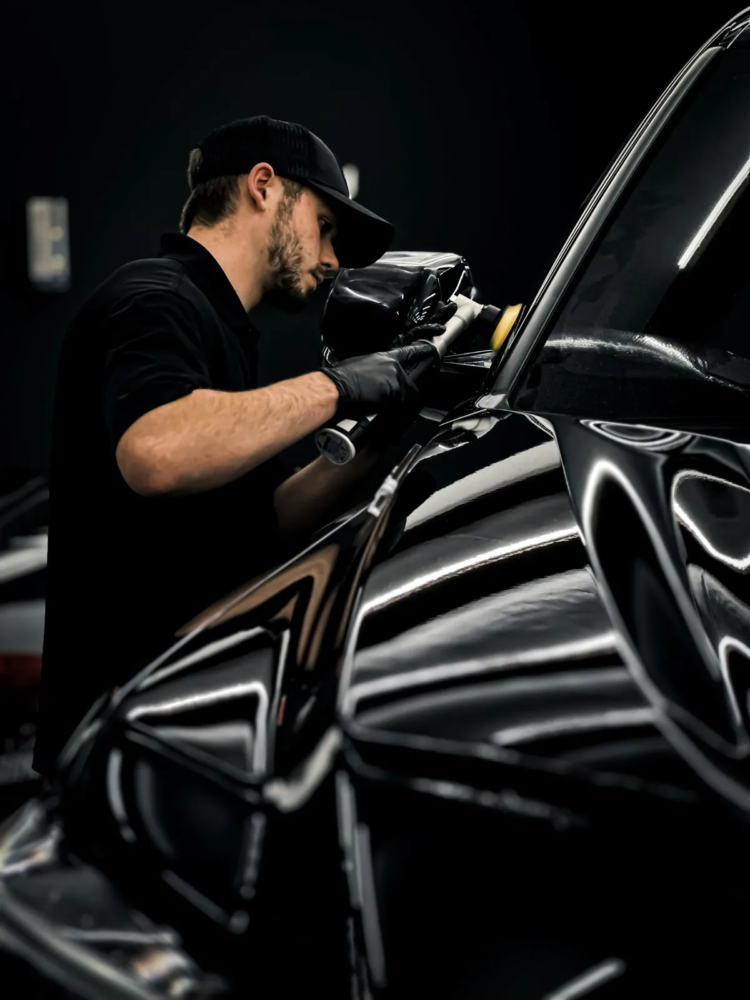

С неё начинают чаще всего
Восстановительная полировка
Мойка, очистка кузова глиной, замер толщины лака, полировка в два этапа, финишная доводка и защитный воск на месяц. Уходят паутинка, следы щёток и матовость.